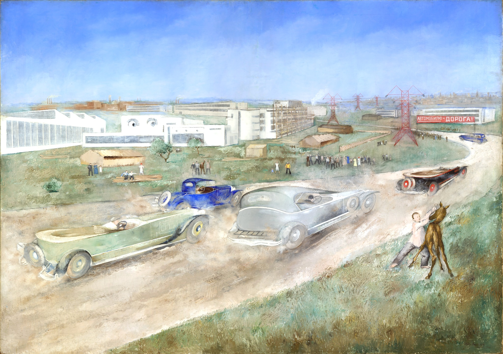

Вильямс Петр Владимирович
Автопробег
Картина отражает романтическое видение действительности и социальный оптимизм в
Советской России 1920-х – начала 1930-х годов. Произведение Вильямса абсолютно соответствует тому, как воспринимался
баланс будущего и настоящего в культуре этого времени. Перед нами будто фотография "виртуальной реальности" тех лет,
фиксация стремительного бега жизни от прошлого к настоящему, от крестьянской лошадки к "железному коню", от аграрной
страны к индустриальной державе, от темного прошлого к "светлому будущему". Вытянутые корпуса машин, преображенные
движением, диагональ дороги – все придает композиции динамику и создает ощущение скорости. Впечатление от увиденного
великолепно передает строка из романа И.Ильфа и Е.Петрова "Золотой теленок"(1931): "Настоящая жизнь полетела мимо,
радостно трубя и сверкая лаковыми крыльями"